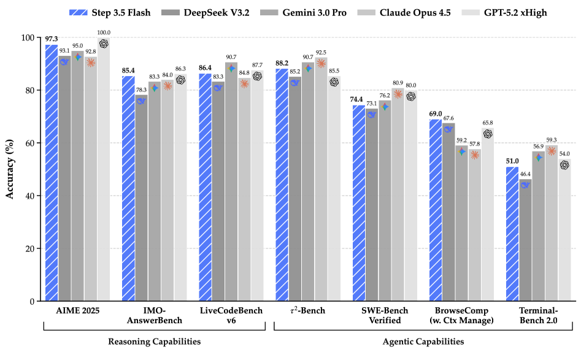
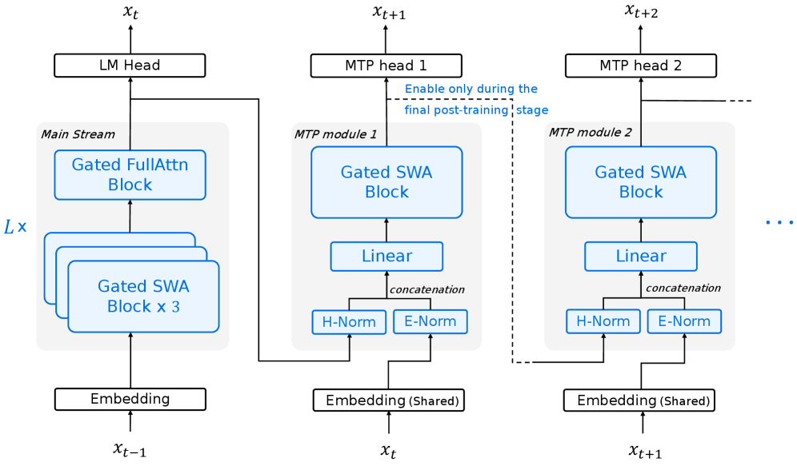
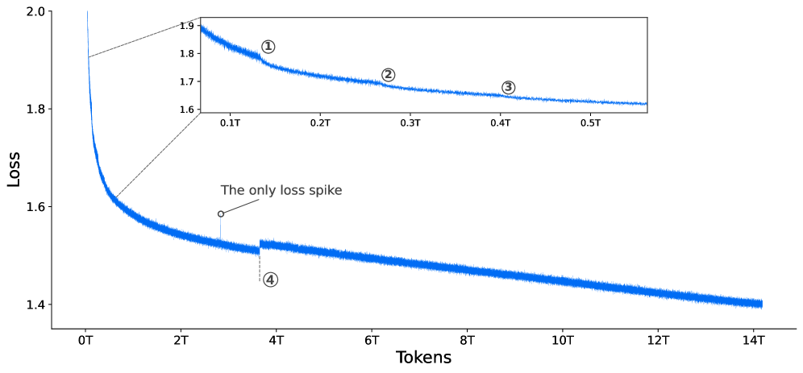
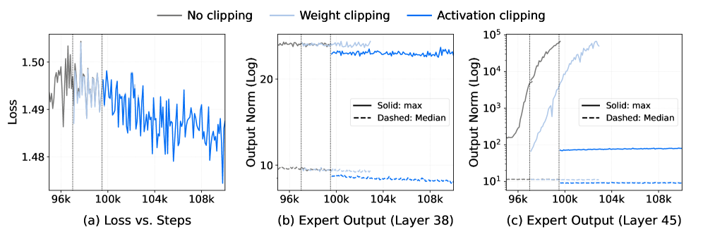
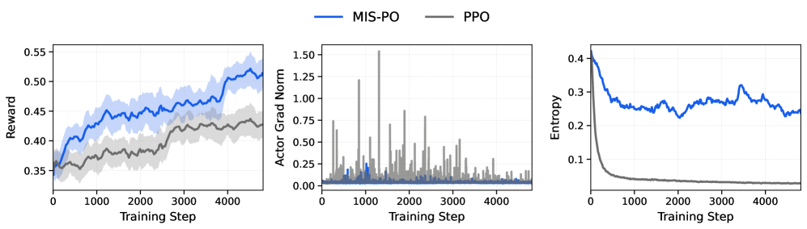
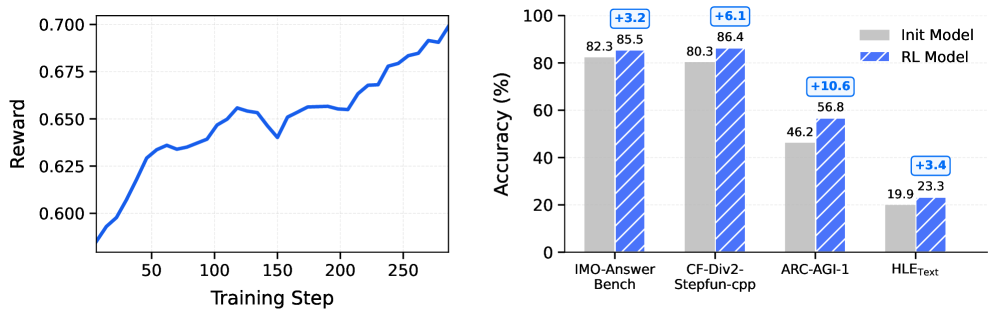
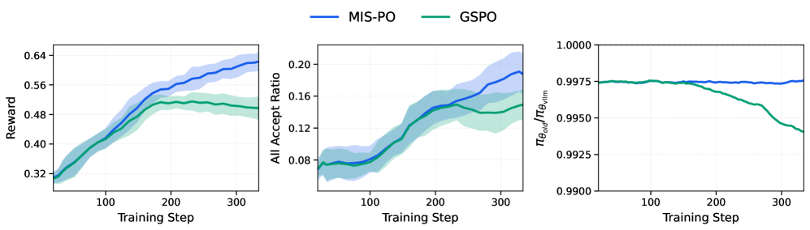

一个 196B 总参 / 每 token 仅激活 11B 的稀疏 MoE。它把「前沿智能」和「推理延迟」当成必须同时满足的硬约束——因为在 Agent 时代，模型要被反复调用成百上千轮，慢，就等于不可用。
Step 3.5 Flash 的核心命题是「效率前沿」：在激活参数只有同类开源模型 1/3 左右的前提下，把数学、代码、工具调用（Agent）三类能力做到与 GPT-5.2 xHigh、Gemini 3.0 Pro 等闭源前沿模型同一梯队。它靠四件事达成：

一句话总结：在「同等智能」这条线上，Step 3.5 Flash 把所需的算力成本显著拉低。
过去衡量大模型，主要看两件事：智能和成本。但当模型被用作自主 Agent——写代码、查资料、调工具、跑终端——它会在一个任务里被反复调用几十到上百轮。这时第三个约束浮出水面：推理延迟（wall-clock latency）。延迟低，意味着任务完成更快；或者在固定时间预算内，可以通过 test-time scaling 塞进更多思考。
作者观察到 Agent 负载有一个鲜明的剖面：先是超长上下文的 prefill，然后是漫长的多轮交互式 decode。而当前开源模型有两个痛点：
Step 3.5 Flash 不是「先有架构再凑指标」，而是先确定 Agent 负载的延迟瓶颈在哪，再反推架构。作者把低延迟拆成三条相互耦合的轴，每条都对应一个具体的瓶颈：
用混合注意力（SWA 为主、Full 为辅）化解二次复杂度；选 SWA 而非线性注意力，是为了和投机解码天然兼容。
细粒度 MoE 降低平均 FFN 算力；但专家并行(EP)下路由不均会拖慢同步——用 EP-group 负载均衡防止个别 GPU 成为木桶短板。
挂 3 个轻量 MTP 头，配合投机解码一次验证多个草稿 token；GQA-8 留出的算力余量正好吸收投机的开销。
和线性注意力同为线性复杂度，但 SWA 保留标准注意力语义，可通过 KV masking 做并行树验证，天然适配投机解码。窗口 W=512 在 kernel 效率与捕捉局部依赖间取得平衡。
线性注意力的状态更新机制让「草稿树生成 + 并行验证」变复杂；且没有过硬证据表明它在 Agent 长上下文上更强。投机解码的验证效率才是带宽受限硬件上的关键杠杆。
下面这张图是全文最重要的结构图。先整体看一遍，再逐个模块拆解。

Embedding → 由「Gated SWA Block ×3 + 1 个 Gated FullAttn Block」组成的 Hybrid Block（图中 L× 表示重复 L=11 次，再加最前面一层 Full Attention，共 45 层）→ 顶部 LM Head 输出主 token xt。一句话总结：低延迟 Agent 架构 = SWA（长上下文便宜）+ Full（全局不丢）+ MTP（解码靠投机加速）。
朴素地把 SWA 和 Full 按 3:1 交织（记作 S3F1）虽然便宜，但作者发现它一开始打不过全注意力基线。于是加了两个开销极小的增强来补回质量。下面四张展开卡逐个讲清这套注意力设计。
四层一组的 motif：三层 SWA（W=512）后接一层 GQA-8 全注意力。在 30B-A3B 的端到端消融里（见下表），S3F1 的注意力侧 prefill/decode FLOPs 归一化为 1.00，而全注意力 FFFF 要贵约 2.68× / 2.90×。
但 S3F1 有稳定的质量退化（如 LongCtx 从 28.8 掉到 27.5）。所以作者没有止步于此，而是用「增强 query head + head-wise 门控」把质量补回来——这正是下面两张卡的内容。
从全注意力切到 S3F1 会掉点，作者把 SWA 层的 query head 数从 64 提到 96（消融中的小模型是 32→48）就能基本补平。为什么算「免费午餐」？因为 SWA 的 query-to-kv 比高达 12，长文本下 SWA 处于 IO-bound 区间，即便大幅加 query head，理论 FLOPs 略增、实际延迟几乎不变。
效果：S3F1+Head 在预训练上甚至超过全注意力基线（55.7 vs 54.1），后训练后 LongCtx 从 27.5 回升到 28.2、Sci 从 42.4 回到 44.0，几乎抹平差距。
朴素 SWA 的一个毛病：当窗口里没有有用信息时，它无法把多余的注意力权重「吸收」掉。已有工作往窗口里塞可学习但与数据无关的 sink token 来缓解。作者换了一条路：在每个头上加一个参数极少的 head-wise 门控 g = σ(w·x)，可视为数据相关的 sink token——门由当前输入决定，能针对性地泄掉无用权重。
在 100B-A10B 的受控预训练里，head-wise 门控全面优于固定 sink token，平均分从 62.5 提到 64.4（+1.9）。而且它对理论 FLOPs 和实际延迟都几乎无感。
平均 64.4（BBH 73.7 / MMLU 67.0 / CMMLU 77.1）。数据相关、参数高效、延迟无感。
平均 62.5（BBH 70.6 / MMLU 65.1 / CMMLU 74.6）。数据无关，表达力受限。
每个 MoE 层有 288 个路由专家 + 1 个共享专家，top-k 路由每 token 激活 8 个。这让总知识容量达 196B，而每 token 激活仅 11B。
问题：专家并行(EP)把专家分到不同 GPU 上，若 token 分配偏斜，少数专家（及其 GPU）被打爆，同步点就被它们拖慢。loss-free 负载均衡只能保证全局均匀，不保证每个微批、每个 EP rank均匀。作者于是显式加了一个 EP-group 均衡 loss（LEP = G·Σ fg·pg），直接促使各 rank 利用率均匀，消除 straggler。
挂 3 个 MTP 头，每个仅由「一层 SWA + 一个 dense FFN」构成，总共只加 0.81B 参数（约 0.41%）。MTP-h 基于位置 t 的主干隐状态预测 xt+1+h，供投机解码一次提交多个 token。
下表是 30B-A3B 上四种注意力布局的端到端对比（预训练 → 长上下文扩展 → SFT）。重点看最后两行：S3F1+Head 用约 1/2.7 的注意力成本，拿到与全注意力相当甚至更好的质量。
| 注意力布局 | 相对 FLOPs (decode/prefill) | 预训练均分 | SFT 均分 | 长上下文 |
|---|---|---|---|---|
| FFFF（全注意力） | ~2.68 / 2.90 | 54.1 | 33.2 | 28.8 |
| S1F1（1:1 交织） | ~1.58 / 1.65 | 54.6 | 34.1 | 29.6 |
| S3F1（3:1，朴素） | ~1.00 / 1.00 | — | — | 27.5 |
| S3F1+Head（最终采用） | ~1.01 / 1.02 | 55.7 | 32.9 | 28.2 |
S1F1 质量最好但贵约 60%；S3F1+Head 以最低成本拿到强而稳的长上下文表现，故被选为默认配置。FLOPs 归一化到 S3F1。
超大规模稀疏 MoE 最容易翻车的地方不是「不收敛」，而是悄悄失稳——loss 看着平滑，底层数值早已爆掉。作者的做法是：先建一套微批级、异步的监控诊断栈（每轮 4096 GPU 产生近 600 万条指标消息，用异步 Metrics Server 把开销压到约 100ms/轮），再用它精准定位并根治三类失稳。

一句话总结：可观测性 + 针对性缓解 = 把「超大 MoE 训练」从玄学变成工程。
三类失稳，逐个拆解：
Muon 用 Newton–Schulz 迭代近似半正交更新方向。作者采用收敛更快的 Polar Express 迭代（固定 T=6 步）。但即便用了官方推荐的 safety scaling，仍偶发尖锐且不可恢复的 loss spike——且非确定性（从邻近 checkpoint 重启常能绕过），指向数值病理。
仿真发现：bf16 下的 Polar Express 在特定更新统计下，会因加法的累积误差罕见地产生极端中间离群值。修复方案干净利落：只把 Polar Express 迭代（状态与中间量）转成 float16，其余保持混合精度。改完后尖峰不再复现。
常说的「dead expert」指专家长期收不到 token、没有梯度。但作者发现一种更隐蔽的形态：路由派发明明稳定，专家侧却出现激活消失、参数范数停滞或衰减。两个关键诱因：
实操建议：别只盯路由统计（它不敏感），要监控专家侧的每专家激活范数与参数范数；当一部分专家的 min-to-median 比值持续下降，就是专家「濒死」的早期预警。
随着专家专精成熟，深层 MoE 出现局部失稳：少数专家（常常每层一两个）的激活范数迅速增长，其余专家照常，形成重尾分布——median 稳，max 爆炸，逼近数值溢出。要命的是这完全被训练 loss 掩盖。
作者据此把「每专家激活范数的 max/median 比值」立为可靠的失稳监控指标，并对比两种干预（见下图）：
成因分析：高频 bi-gram 触发专家专精；pre-norm 下单个专家可无界放大输出；SwiGLU 的门控/上投影强对齐产生极端稀疏激活；Muon 进一步放大持续的低秩更新——多因素叠加导致爆炸。

一句话总结：监控对了指标（max/median），干预选对了位置（激活而非权重），失稳就可控。
作者给每条训练样本前置一段人类可读的元数据串 M（内容类型如 Code/Book/Paper/Web、语言 EN/ZH、领域、来源），拼成 s = [M ; x] 一起训练。元数据提供「全局线索」，降低对后续内容的不确定性，加速收敛、提升数据效率。
关键 trick：训练约 3.8T tokens 后，保留 M 在上下文里但把它从 loss 中 mask 掉，只继续预测正文 token。此时模型已学会把元数据当作条件信号，于是把全部优化压力分配给正文——这就是图 3 标记 ④ 对应的时刻。
整个训练沿着「广 → 专 → 长」推进：先在 4k 上下文上做宽泛开域预训练打底，再退火到更高质量的知识与软件开发数据并把窗口扩到 32k，最后用专门的中训练把上下文拉到 128k、强化长程推理与 Agent 能力。
宽泛开域训练，最大化覆盖与基础能力。batch size 在前 400B tokens 内从 4096 渐增到 16384。
数据混合退火，偏向代码与 PR/Issue/Commit，提升高质量知识与推理密度样本占比；先 2T@4k，再 1T@32k。
侧重软件工程与工具使用混合；回放 81B（21%）预训练 token 缓解分布漂移。冻结 MoE 路由权重。
用合成长程推理 + 自然长文档专精长上下文，叠加 code/search/tool agent 领域数据，为后训练提供强初始化。
数据侧：自建 StepCrawl 采集与清洗万亿级高质量网页/书籍 token；代码用改进版 OpenCoder 管线并放宽过滤（允许 0–6 处启发式违规）；专门构建 PR/Issue/Commit 数据集（来自 10+ star 仓库）以贴近真实软件工程工作流。
后训练面临一对相互纠缠的难题：(1) 给自蒸馏迭代领域专家成本高昂——训单一通才会牺牲专精，养一堆专家又会碎片化、迭代不可持续；(2) RL 难以规模化到 MoE 的长程推理——off-policy rollout 里微小的 token 级偏差会累积成高方差梯度，而 MoE 的专家路由带来更大的分布漂移，让优化更不稳。
作者的解法是一套建立在统一 SFT 基础上的后训练配方，在「领域专精」与「全局综合」之间交替：
第一阶段跨域 SFT（数学/代码/STEM/逻辑/通用 QA/Code Agent/工具/搜索/长上下文）；第二阶段注入 OOD 信号最大化推理密度（约 30k 专家级化学轨迹 + 合成算术，3 个 epoch 解锁潜能）。
在统一 SFT 基线上，对各领域分别做 RL，得到一批领域专家模型。
让专家们生成高质量轨迹，用拒绝采样剔除语言混杂、过度思考等坏模式，把专家知识集中蒸馏进一个学生模型——比直接 RL 整合更稳更省。
在高质量自蒸馏基础上做大规模 RL，让最终通才在各任务上保持与专精基线相当的水平。
长程 RL 的高方差，主要来自推理引擎与训练框架的不一致，以及迭代更新带来的 off-policy 失配。传统重要性采样(IS)把梯度按概率比缩放，微小的 token 级偏移会被放大成噪声梯度。MIS-PO 受 Metropolis Independence Sampling 启发，换了个思路：
x_t = π_old / π_vllm，落在 [0.5, 2] 之外的（斜纹方块）被 mask 掉——压制训练与推理之间的局部失配。ρ̄(τ)=(∏ x_t)^(1/T)，落在 [0.996, 1.001] 之外的整条丢弃（τ₂、τ₅ 变灰）——剔除已整体漂移的轨迹。公式：𝓛actor = −𝔼τ∼π_vllm [ 𝕀(xt) · 𝕀(ρ̄(τ)) · log πθ(at|st) · Ât ]。两个二值掩码（token 级 + 轨迹级）替代了连续重要性权重。

一句话总结：稳定，是 MIS-PO 能把 RL 推到长程、推到 MoE 的前提。
除了 MIS-PO 主体，还有两个稳定性配件：Truncation-Aware Value Bootstrapping——对被上下文截断的轨迹不再粗暴给 0 奖励，而是用末状态的价值估计 Vφ(sT) 替代，把「截断」当成「视界中断」而非「任务失败」，即便 20% 截断率也能稳；Routing Confidence Σk（激活专家的平均概率质量）作为 MoE 专属的稳定性代理——高路由置信度的模型更鲁棒，能在不依赖复杂干预（如 Router Replay、严格 on-policy）的情况下做 off-policy 训练。

一句话总结：reward 稳步涨 + 多基准齐涨 = RL 配方真的在「持续自我改进」。
可验证奖励（RLVR）：逻辑/指令遵循/代码用规则检查器，STEM 用模型验证器（消融中模型验证器比直接 math-verify 平均高 2.0%）。
不可验证奖励（RLHF）：用成对生成式奖励模型 GenRM（输出胜率置信度 → Bradley-Terry 胜率作为奖励）；长度控制建模为置信度惩罚，抑制 RL 中的长度膨胀；对编造引用、过度自信、语言不一致的回答给 0 奖励。
MetaRM：额外验证器，惩罚「结论对但推理错」的伪推理，比 vanilla GenRM 在每个基准上高 0.5%–3%。Agent 奖励：搜索用实体匹配打分，报告生成用 rubric 评审（三元判断映射成非对称二值奖励，收敛更快）。

一句话总结：MoE 上「锁住训练–推理偏移」= 把 RL 稳定放大的前提。
作者还做了 MIS-PO 在 MoE 上的超长训练验证：reward 持续上升、actor 梯度范数稳定、熵受控，证明 MIS-PO 对大规模 MoE off-policy RL 是可靠的。Agent 训练侧采用 FullyAsync 全异步范式 + sticky 调度（同 session 固定派发到同节点最大化 KV-cache 复用），整体效率提升约 10×。
推理模板：每轮都丢弃推理历史会让长程任务（如 100+ 轮编码会话）失败；全保留又爆上下文。折中方案是选择性保留——只为「最近一次用户指令触发的工具调用轨迹」保留推理痕迹。
工具模板：JSON 的严格语法（转义、分隔符）常让小模型解析出错；XML 允许扁平字符串输出、语法负担小，故被选为默认。
代码 Agent 基建：自建 Session-Router 用 Kubernetes 编排容器、Tmux 保证交互一致性，支撑数千并发环境。共策划 50k 个可验证环境，覆盖 15k+ 仓库、20+ 编程语言，环境构建成功率约 40%；并训练模型适配 OpenHands、SWE-agent、Terminus-2、ClaudeCode 等多种交互框架以防过拟合。
结论一句话：在推理与 Agent 两条线上，Step 3.5 Flash 都进入了闭源前沿模型的同一梯队，而激活参数只有它们对标开源模型的 1/3 左右。基座（Base）层面，它在 SimpleQA 上拿到 31.6，反超 DeepSeek-V3.2-Exp Base（27.0），而总参仅为后者的约 1/3.4——能力密度优势明显。
挑几条最能说明问题的基准，和闭源前沿放一起看（Step 3.5 Flash 为 Vanilla 标准推理；PaCoRe 为其 test-time scaling 配置）：
| 基准 | Step 3.5 Flash | Gemini 3.0 Pro | Claude Opus 4.5 | GPT-5.2 xHigh |
|---|---|---|---|---|
| AIME 2025 | 97.3 | 95.0 | 92.8 | 100.0 |
| IMO-AnswerBench | 85.4 | 83.3 | 84.0 | 86.3 |
| LiveCodeBench-v6 | 86.4 | 90.7 | 84.8 | 87.7 |
| τ²-Bench | 88.2 | 90.7 | 92.5 | 85.5 |
| SWE-Bench Verified | 74.4 | 76.2 | 80.9 | 80.0 |
| Terminal-Bench 2.0 | 51.0 | 56.9 | 59.3 | 54.0 |
| BrowseComp (w. Ctx Manage) | 69.0 | 59.2 | 57.8 | 65.8 |
| GAIA | 84.5 | 76.6 | 76.1 | 83.5 |
| 激活 / 总参数 | 11B / 196B | — | — | — |
表中数字取自论文 Table 5（Step 3.5 Flash Vanilla 列）。部分对比模型分数为论文复现或来自非官方来源，详见原文表注。Step 3.5 Flash 在多数 Agent 基准上与前沿模型互有胜负，整体进入同一梯队。
达到同等质量时，生成轨迹比 Gemini 3.0 Pro 更长。下一步要剪枝/压缩思考，在不掉点的前提下提速。
想把「通才versatility」与「深度专精」统一起来，正在推进 on-policy 蒸馏的变体以更高样本效率内化专家行为。
学术 Agent 基准之外，专业工作、高级工程、科研级任务才是真自主的前提，需把 RL 推向这些复杂场景。
面向编码与工作场景；分布漂移时（高度专业领域、超长多轮对话）可能出现重复推理、语言混杂、时间/身份不一致。